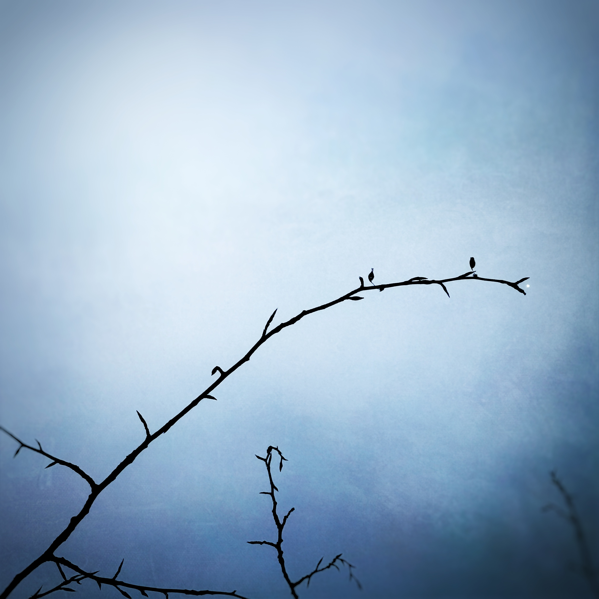
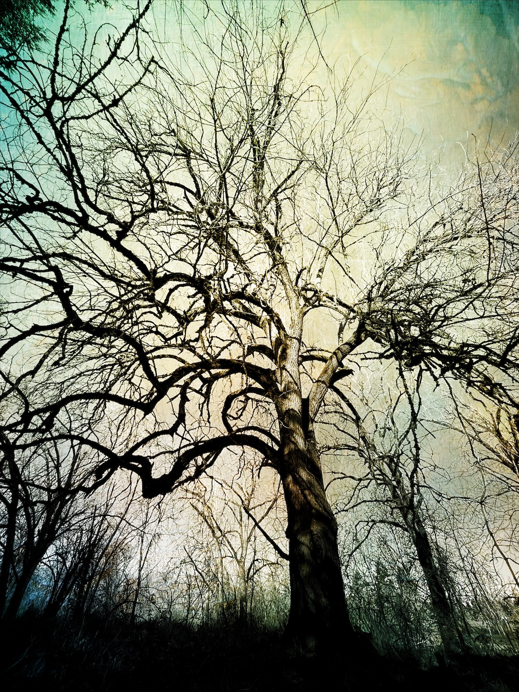
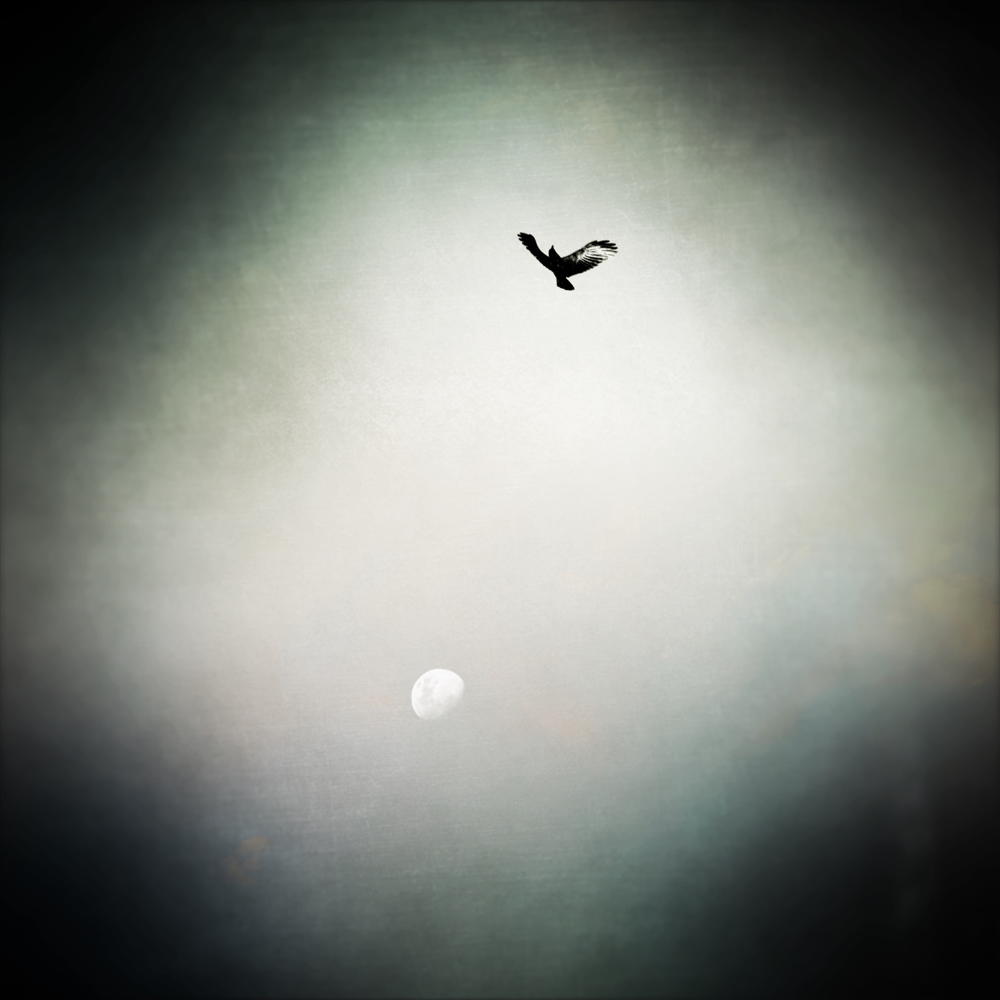
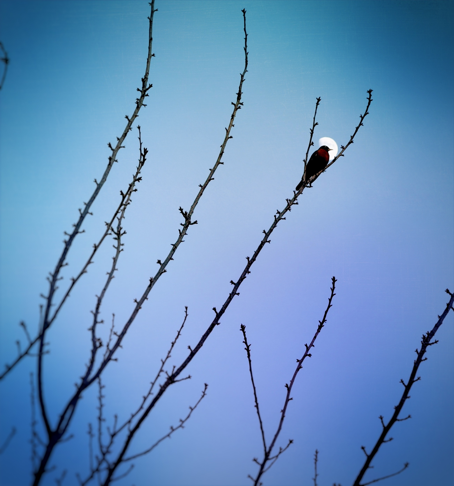
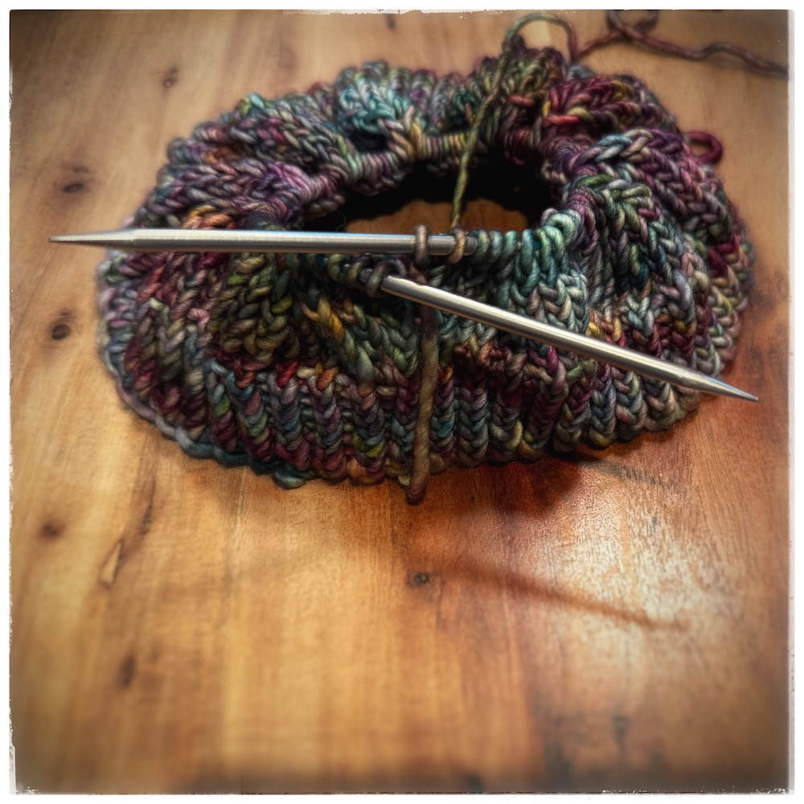
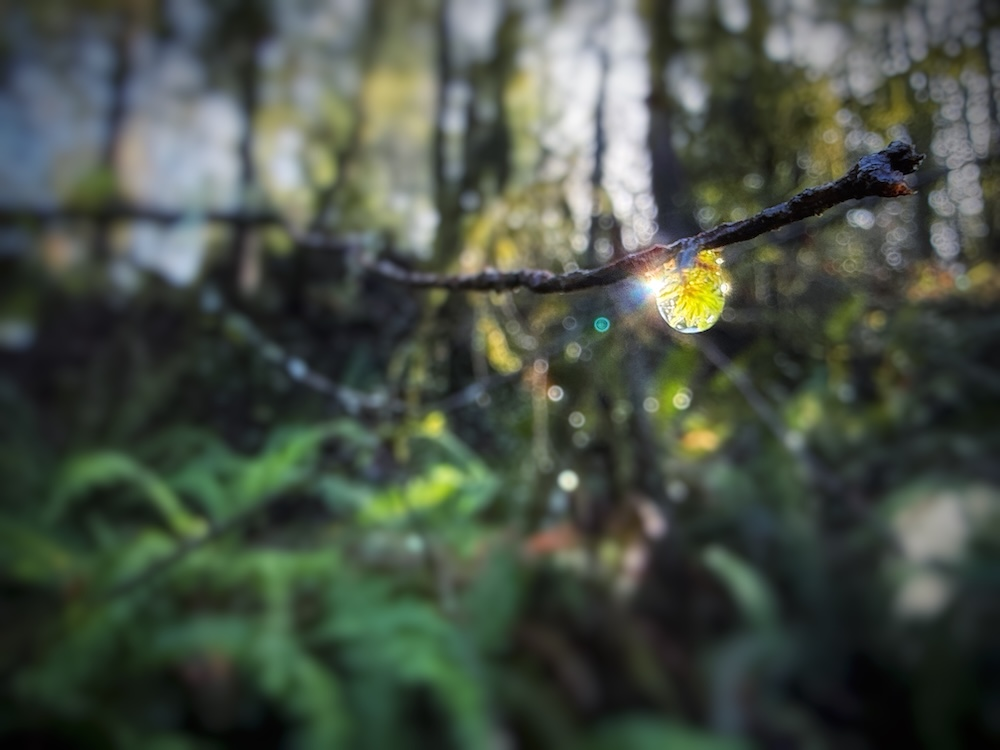

A beautiful day, a mindful meditation, and an intimate conversation with a crow.
micro journal
The intensity of some looks...

A friend reaches wide for a hug.

A hyperfocused day, but a nice walk in the sunshine.
Bushtits everywhere! The sun beckons me earlier each morn.
The moon has been beneath my feet for the past few days. I want a glimpse.
A friend reached for Saturn.
I find myself being molded by what I chose to note and observe.
I watched sea-foam skate, rocks make comet trails in waves, and oystercatchers dodged a wave.
Some trees remind you of how young you are.
I took a moment to stop thinking and just knit with a soft wool green yarn.
Walking meditation - 8 steps as I breathe in and 7 as I breathe out - this must be my polyrhythm.
A misty day - in many ways.
A reflecting day.
I watched fluffy robins bathe vigorously in the birdbath.
A walk with a friend, a finished hat, existence contemplated.
A thought today: What is it to hold the geometry of self? What are your faces, vertices, edges? Your Chirality?
A walk in the fields at night was just delightful. The birds, Jupiter, the waxing moon, and cackling geese filled my soul.
Oh my crows - I am grateful you are here with me.
Robins bring me to a present moment.
Puddles reflect forest by my muddy feet. A moment of awe.
The sun is out! Went for a walk where the river overflowing takes the trail and the kingfisher calls.
The wonders we find on walks:

Reading and knitting all day.
Tea, code, reading, and a walk. Over 18 goldfinches together - such communal bathers. I saw the moon! Finally the clouds opened enough.
A foggy day - mentally and physically.

I didn't realize turkeys go door-to-door.

A swollen river brought the end of so many paths to me. A point of reflection and birdwatching while retracing my steps - A walk of capillaries.
A long stretch and time for doodles.
Oh moss - you amaze me - a world within a world.

A day of sorting books and decluttering while it drizzles. Yellow-rumped warblers chase each other and the wind nudges for attention every now and then.
I saw 8 northern harriers hunting together - what a sight! Also - lot's of northern shoveler tails.

Games of Splendor, drive-by birding, and a walk in the sunshine with my mom by a lake.
Rainy walk + pumpkin soup + mint tea - a simple day
I saw a light in the forest. Practicing contentment today.
Sometimes I feel like I live in a painting.

My red oak friend's arms hold a habitat of moss an ferns that greet me on my walk with soggy shoes. I glimpsed the blue sky for a moment today.